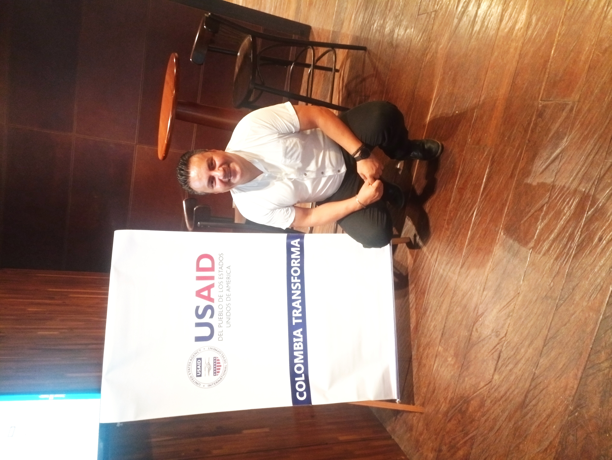

Mi recorrido en proyectos
Desplázate para conocer cada etapa de mi trayectoria: proyectos culturales en Bogotá, atención a la pobreza extrema con Red Unidos, construcción de paz en Arauca y Catatumbo, y proyectos de tecnología en Bogotá.
Proyectos Culturales — Bogotá
Dirección de proyectos para el fortalecimiento de emprendimientos productivos, iniciativas culturales comunitarias e inclusión socioeconómica. Coordinación del "Primer encuentro de cultura campesina bogotana", promoviendo la identidad y el mercado local rural.
- Primer encuentro de cultura campesina bogotana
- Fortalecimiento de emprendimientos productivos comunitarios
- Iniciativas culturales e inclusión socioeconómica en 3 localidades
Pobreza Extrema — Norte de Boyacá y Vichada
Implementación de la estrategia Red Unidos para la superación de la pobreza extrema en el norte de Boyacá y el departamento de Vichada. Acompañamiento a familias, rutas de acceso a servicios y generación de oportunidades productivas en zonas de difícil acceso.
- Estrategia Red Unidos en Norte de Boyacá
- Intervención en Vichada con familias en pobreza extrema
- Rutas de acceso a servicios y oportunidades productivas
Acuerdo de Paz — Arauca y Catatumbo
Articulación técnica para la implementación del Acuerdo de Paz mediante Planes de Desarrollo con Enfoque Territorial (PDET). Construcción de infraestructura comunitaria, Casa Campesina, fortalecimiento educativo y Planes Integrales de Reparación Colectiva en zonas de conflicto.
- PDET en Hacarí y El Tarra (Catatumbo)
- Casa Campesina en Botalón, Tame (Arauca)
- Planes Integrales de Reparación Colectiva con UARIV
- Fortalecimiento educativo y organizaciones rurales
Proyectos de Tecnología — Bogotá (Último año)
En el último año he liderado proyectos de transformación tecnológica en Bogotá: desarrollo de agentes autónomos, automatización de procesos con n8n, análisis predictivo, chatbots avanzados y sistemas multiagentes. Cerrando la brecha entre el impacto social y la eficiencia tecnológica.
- Agentes autónomos y automatización con n8n
- Análisis predictivo y chatbots avanzados
- Sistemas multiagentes e inventarios en tiempo real
- Visión gerencial del código para ROI técnico
¿En qué puedo ayudarte?
Diseño y Formulación de Proyectos
Estructuro proyectos de impacto social y tecnológico alineados a fuentes de financiación, PDET y planes de desarrollo territorial.
Ejecución y Seguimiento Territorial
Acompaño la implementación en terreno, coordinando actores institucionales y comunidades en zonas de difícil acceso y conflicto.
Transformación con IA y Automatización
Implemento agentes de IA y flujos con n8n para mejorar la eficiencia operativa y la toma de decisiones basada en datos.
Mentoría en Gestión de Proyectos
Transferencia de conocimientos en más de 1,395 actividades y proyectos de alto impacto social y tecnológico.